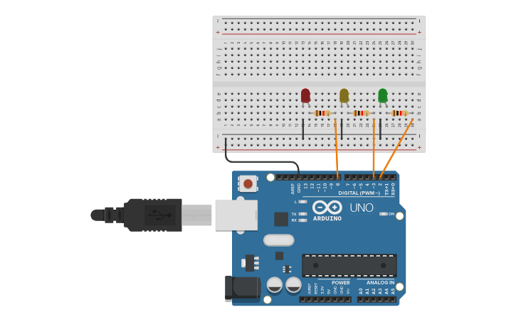

PROJECT 19: TRAFFIC LIGHT
Automated Intersection Controller
Mission Brief
Traffic lights keep our roads safe by following a strict timing sequence. In this project, you will replicate a standard intersection signal using three colored LEDs, programming the Arduino to cycle through Green, Yellow, and Red automatically.
Key Components
- Arduino Uno R3
- 3x LEDs (Red, Yellow, Green)
- 3x Resistors
- Jumper Wires
- Breadboard
Circuit Diagram

Pin Connections
| Arduino Pin | Component Connection |
|---|---|
| Pin 3 | Red LED Anode (+) |
| Pin 2 | Yellow LED Anode (+) |
| Pin 1 | Green LED Anode (+) |
| GND | Negative Rail (Common Ground) |
Step-by-Step Instructions
- Connect the Arduino GND pin to the top Negative Rail on the breadboard.
- Insert the Red, Yellow, and Green LEDs into the breadboard.
- Connect a resistor from the Cathode (Short Leg) of each LED to the Negative Rail.
- Connect the Red LED Anode (Long Leg) to Pin 3.
- Connect the Yellow LED Anode (Long Leg) to Pin 2.
- Connect the Green LED Anode (Long Leg) to Pin 1.
- Upload the code below.
Arduino Code
/* Project 19 - Traffic Light Controller
* Red on Pin 3, Yellow on Pin 2, Green on Pin 1.
*/
const int red = 3;
const int yellow = 2;
const int green = 1;
void setup() {
// Initialize pins as outputs
pinMode(red, OUTPUT);
pinMode(yellow, OUTPUT);
pinMode(green, OUTPUT);
}
void loop() {
// 1. GREEN LIGHT (Go)
digitalWrite(green, HIGH);
digitalWrite(yellow, LOW);
digitalWrite(red, LOW);
delay(5000); // Stay Green for 5 seconds
// 2. YELLOW LIGHT (Slow Down)
digitalWrite(green, LOW);
digitalWrite(yellow, HIGH);
digitalWrite(red, LOW);
delay(2000); // Stay Yellow for 2 seconds
// 3. RED LIGHT (Stop)
digitalWrite(green, LOW);
digitalWrite(yellow, LOW);
digitalWrite(red, HIGH);
delay(5000); // Stay Red for 5 seconds
}
How It Works
- State Logic:
-
Sequential Execution:
The code reads from top to bottom. It turns on Green, waits, then switches to Yellow, waits, and finally Red. -
Exclusive States:
Notice that when we turn one light ON (`HIGH`), we explicitly turn the others OFF (`LOW`). This ensures two lights are never on at the same time (which would cause traffic confusion!). - Pin 1 (TX):
-
Hardware Note:
We used Pin 1 for the Green LED. Pin 1 is also used by the Arduino to "Talk" (Transmit/TX) to the computer. You might see the Green LED flash rapidly when uploading code—this is the data being transferred!
Expected Output
The LEDs will cycle continuously: Green (Go) -> Yellow (Caution) -> Red (Stop). The Green and Red lights stay on longer than the Yellow light.
What You Learned
- How to model real-world systems (like traffic signals) in code.
- Using `delay()` to control the duration of specific states.
- Managing multiple output pins in a sequence.
Next Steps / Extension Ideas
Add a "Pedestrian Button" using a push button. When pressed, force the light to turn Red immediately so the pedestrian can cross!